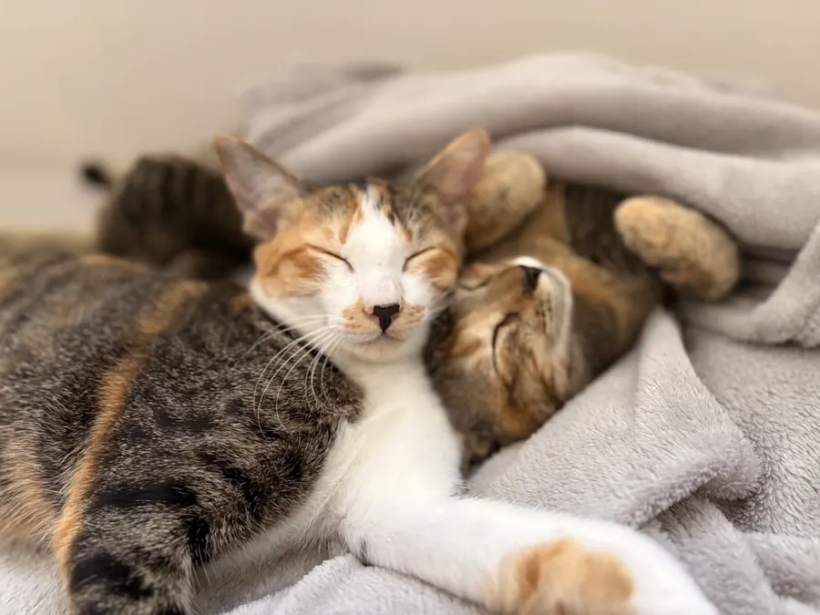
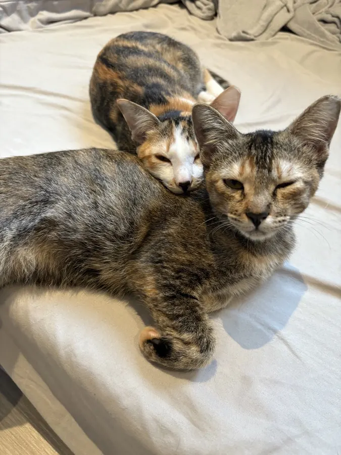
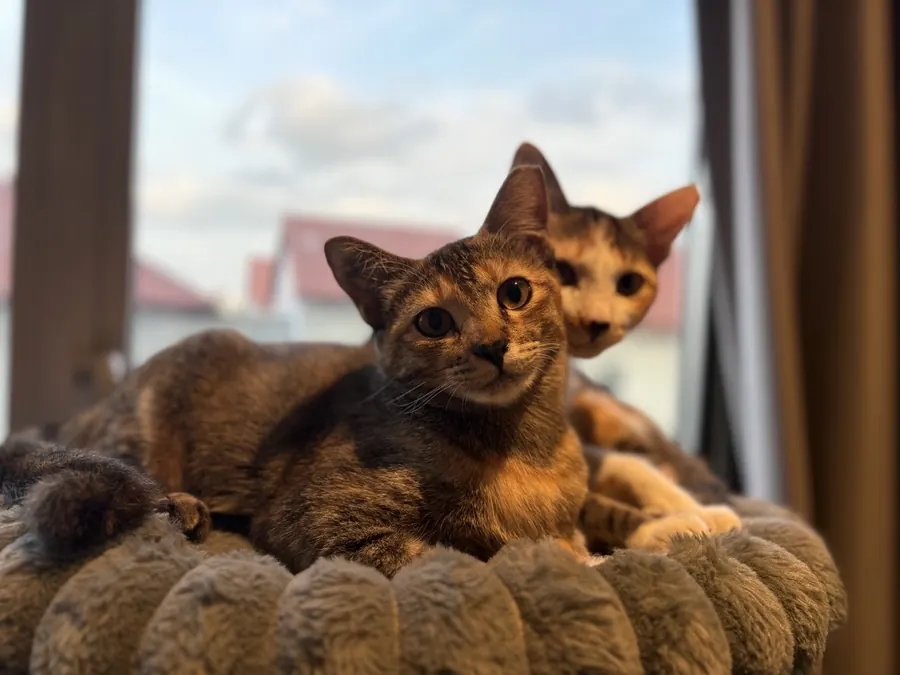
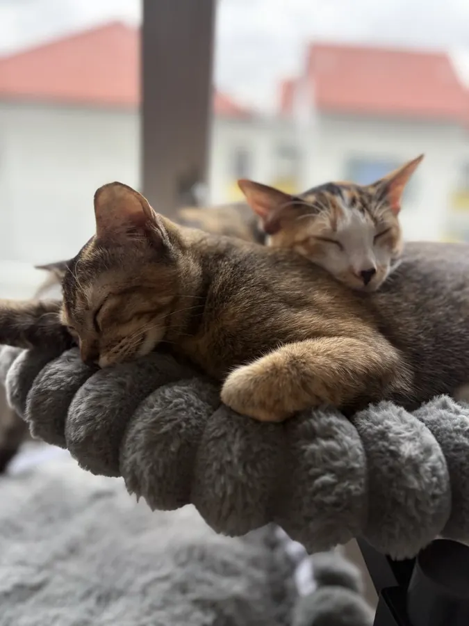
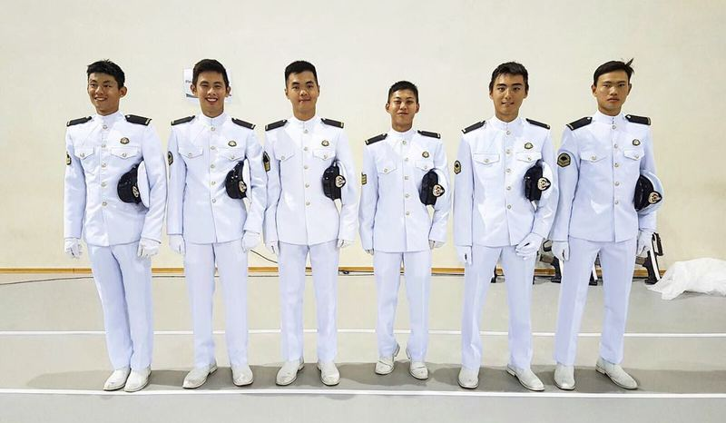
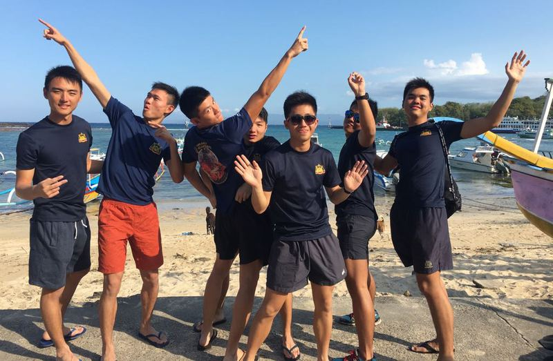

Latte & Mocha We brought Latte and Mocha home. View InstagramA few projects, communities, and milestones that have shaped my life outside work.
 Code in the Community
I taught underprivileged children basic coding skills using Scratch.
Code in the Community
I taught underprivileged children basic coding skills using Scratch.
 NUS CAPTs_Lock
I served on the CAPTs_Lock committee, teaching basic programming skills to students at CAPT.
NUS CAPTs_Lock
I served on the CAPTs_Lock committee, teaching basic programming skills to students at CAPT.
 Deaf Lightsabering
I facilitated the Lightsabering with the Deaf trail at Community Engagement Fest.
Deaf Lightsabering
I facilitated the Lightsabering with the Deaf trail at Community Engagement Fest.



Naval Diving Unit I completed National Service with the Naval Diving Unit.